动漫人像 v7：原图 / 已发布柔和插画 / 动漫增强
21 张全量样片。模型可能改变身份、年龄感和肤色；照片及署名见各卡片。程序性能测试不代表审美评分。
CPU 性能与已知局限 · 全部四种风格
01_portrait.jpg
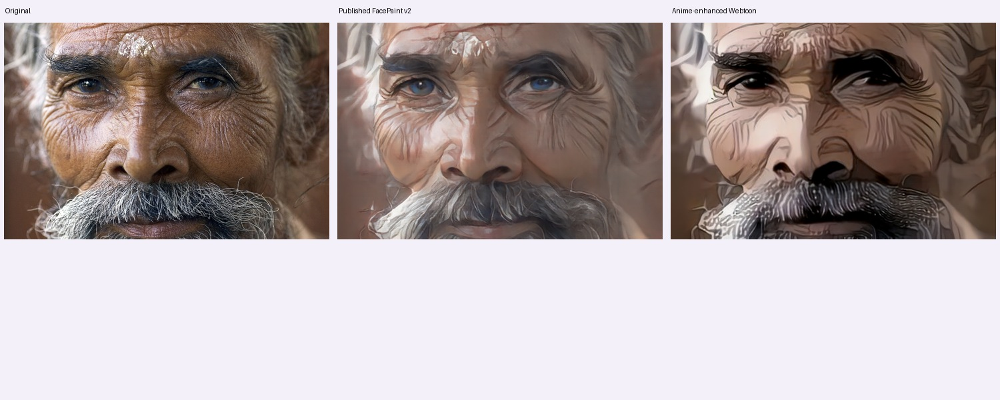
4.55 秒 · 局部人脸 1 · 原尺寸 PNG
来源署名
Jorge Royan · CC BY-SA 3.0 · 来源02_portrait.jpg
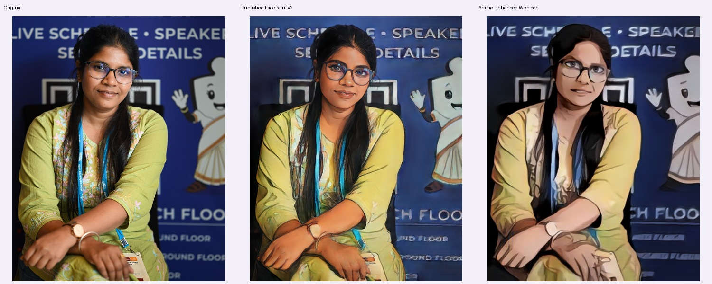
11.88 秒 · 局部人脸 1 · 原尺寸 PNG
来源署名
JyotiPN · CC BY-SA 4.0 · 来源03_portrait.jpg
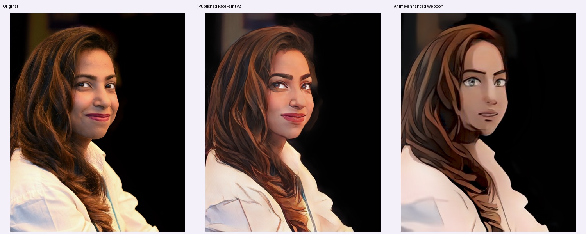
11.72 秒 · 局部人脸 1 · 原尺寸 PNG
来源署名
JyotiPN · CC BY-SA 4.0 · 来源04_portrait.jpg
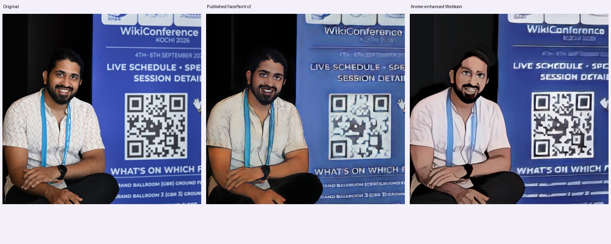
13.27 秒 · 局部人脸 1 · 原尺寸 PNG
来源署名
JyotiPN · CC BY-SA 4.0 · 来源05_portrait.jpg
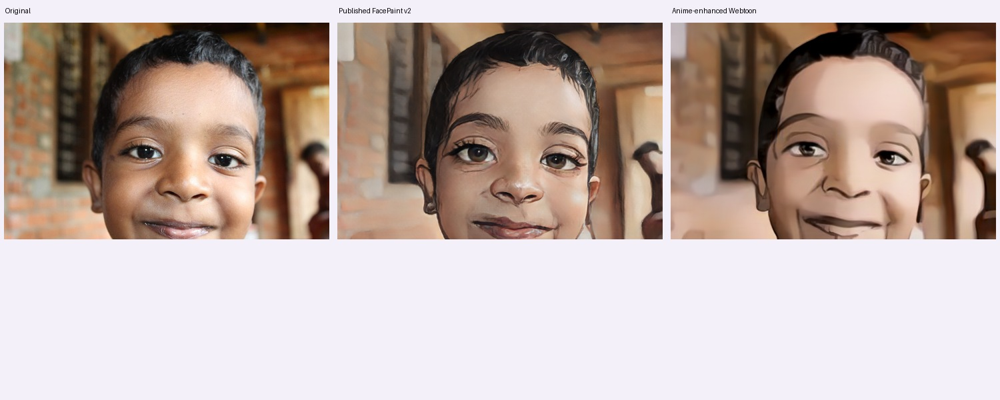
9.28 秒 · 局部人脸 1 · 原尺寸 PNG
来源署名
Keerikkadanjose · CC0 · 来源06_portrait.jpg
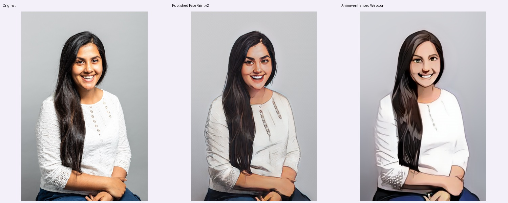
9.55 秒 · 局部人脸 1 · 原尺寸 PNG
来源署名
Justine Desmond / Brighton & Hove City Council · OGL 3 · 来源07_portrait.jpg
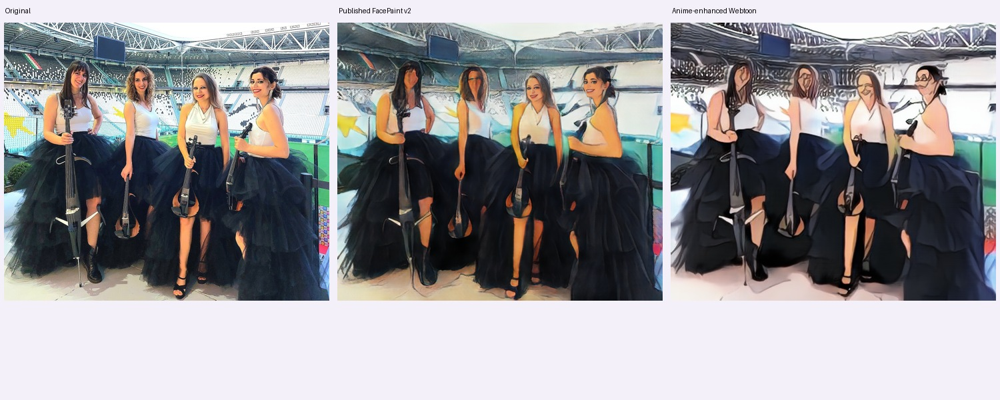
9.36 秒 · 局部人脸 0 · 原尺寸 PNG
来源署名
Luisa Cello · CC0 · 来源08_portrait.jpg
13.18 秒 · 局部人脸 1 · 原尺寸 PNG
来源署名
Congress of the Philippines · Public domain · 来源13_portrait.jpg
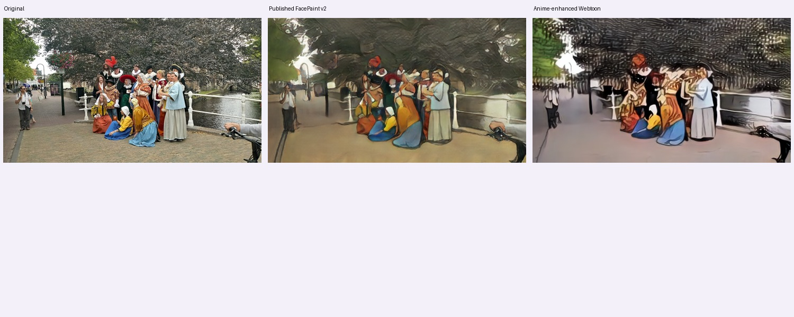
6.60 秒 · 局部人脸 0 · 原尺寸 PNG
来源署名
Donald Trung Quoc Don (Chữ Hán: 徵國單) - Wikimedia Commons - © CC BY-SA 4.0 International.(Want to use this image?)Original publication 📤: --Donald Trung 『徵國單』 (No Fake News 💬) (WikiProject Numismatics 💴) (Articles 📚) 22:58, 14 November 2019 (UTC) · CC BY-SA 4.0 · 来源14_portrait.jpg
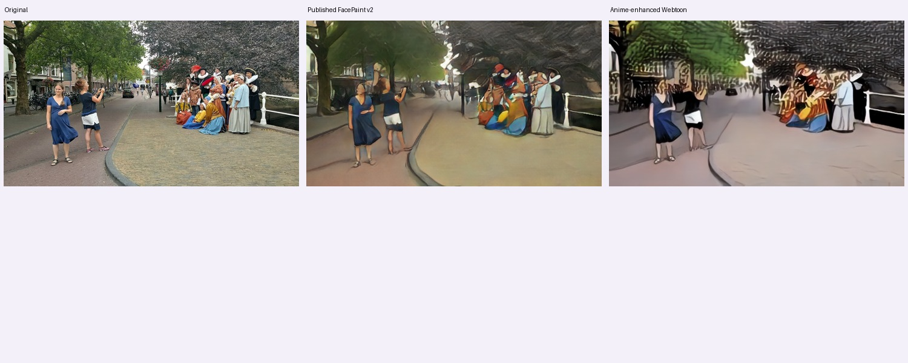
5.80 秒 · 局部人脸 0 · 原尺寸 PNG
来源署名
Donald Trung Quoc Don (Chữ Hán: 徵國單) - Wikimedia Commons - © CC BY-SA 4.0 International.(Want to use this image?)Original publication 📤: --Donald Trung 『徵國單』 (No Fake News 💬) (WikiProject Numismatics 💴) (Articles 📚) 22:58, 14 November 2019 (UTC) · CC BY-SA 4.0 · 来源15_landscape.jpg
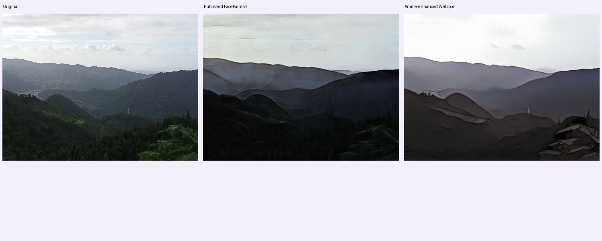
8.11 秒 · 局部人脸 0 · 原尺寸 PNG
来源署名
Kai3952 · CC BY-SA 4.0 · 来源16_landscape.jpg
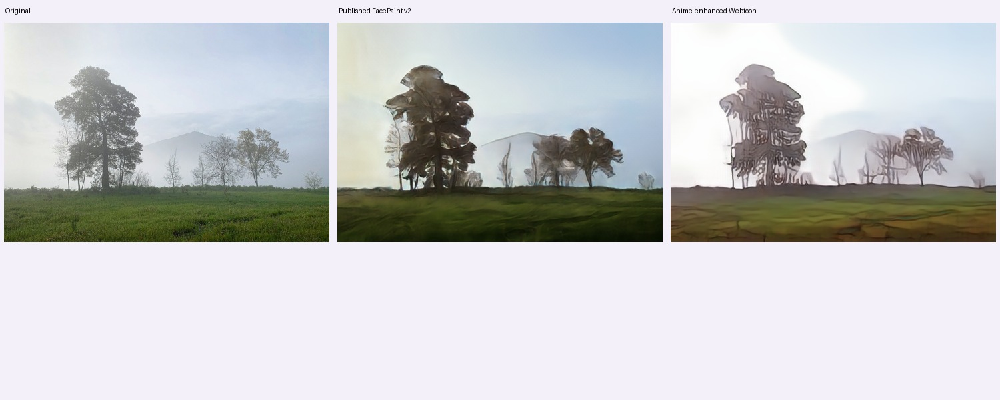
7.70 秒 · 局部人脸 0 · 原尺寸 PNG
来源署名
Sergei Gussev · CC BY 4.0 · 来源17_architecture.jpg
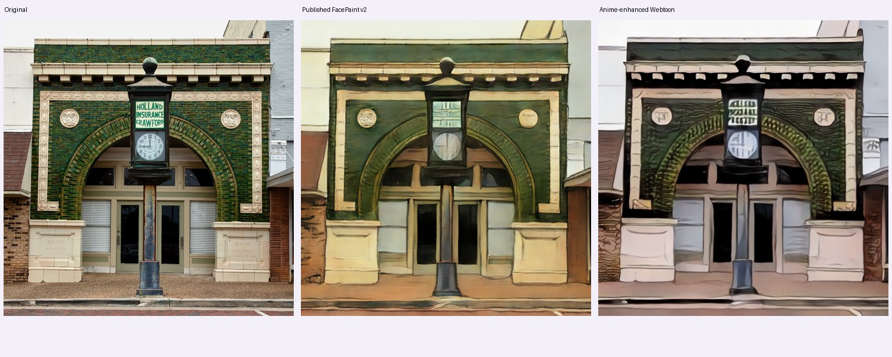
11.52 秒 · 局部人脸 0 · 原尺寸 PNG
来源署名
Carol M. Highsmith · Public domain · 来源18_architecture.jpg
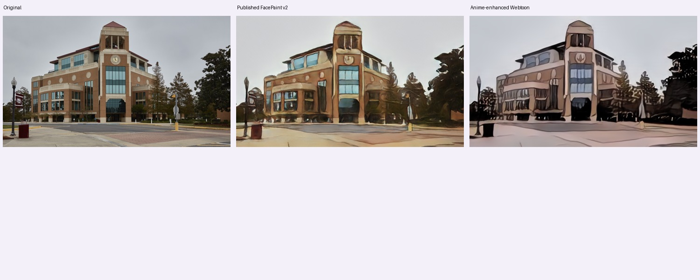
7.01 秒 · 局部人脸 0 · 原尺寸 PNG
来源署名
Carol M. Highsmith · Public domain · 来源19_animal.jpg
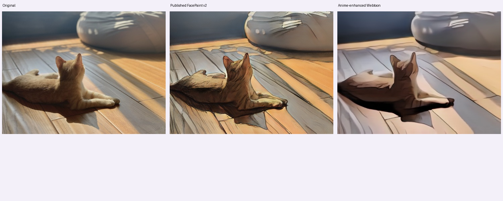
7.98 秒 · 局部人脸 0 · 原尺寸 PNG
来源署名
HanWsplace · CC0 · 来源23_portrait.jpg
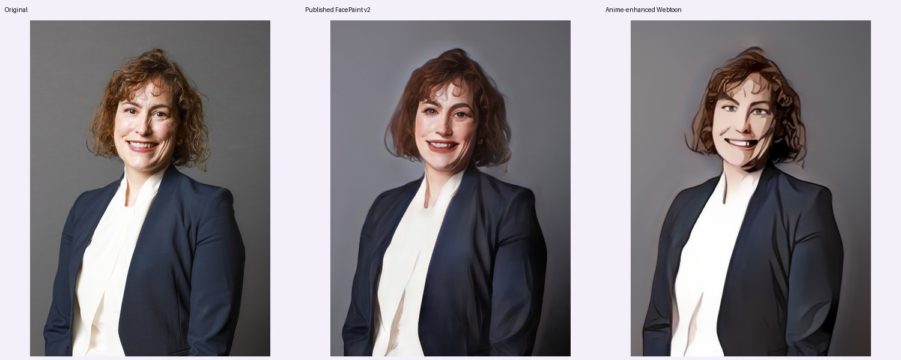
10.37 秒 · 局部人脸 1 · 原尺寸 PNG
来源署名
Lauren Hurley / No 10 Downing Street · OGL 3 · 来源22_portrait.jpg
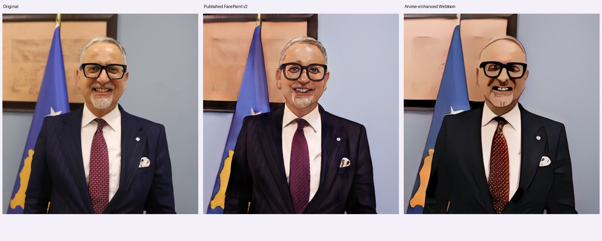
12.15 秒 · 局部人脸 1 · 原尺寸 PNG
来源署名
Ministria e Shëndetësisë e Republikës së Kosovës / Ministry of Health of the Republic of Kosovo · Public domain · 来源26_portrait.jpg
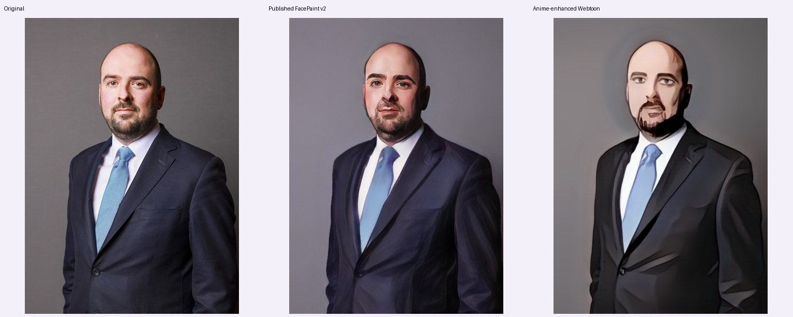
10.23 秒 · 局部人脸 1 · 原尺寸 PNG
来源署名
Lauren Hurley / No 10 Downing Street · OGL 3 · 来源27_portrait.jpg
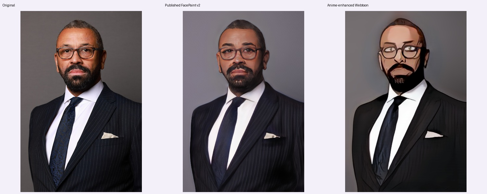
8.86 秒 · 局部人脸 1 · 原尺寸 PNG
来源署名
Lauren Hurley / No 10 Downing Street · OGL 3 · 来源28_portrait.jpg
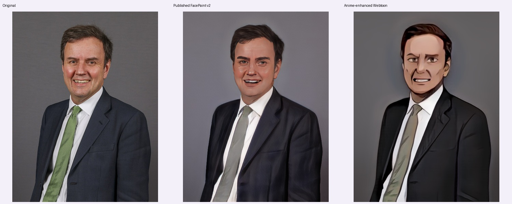
11.37 秒 · 局部人脸 1 · 原尺寸 PNG
来源署名
Rory Arnold / No 10 Downing Street · OGL 3 · 来源29_portrait.jpg
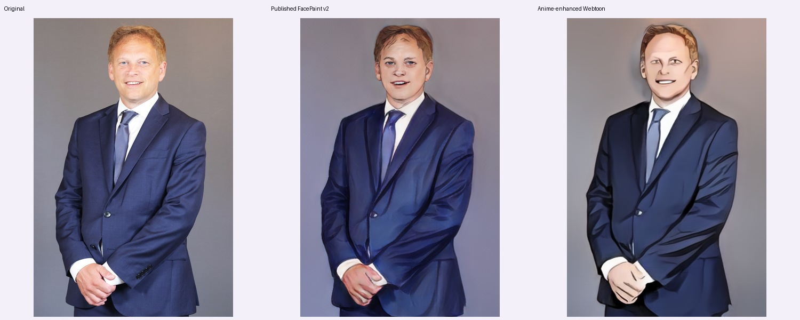
8.73 秒 · 局部人脸 1 · 原尺寸 PNG
来源署名
Alice Hodgson / No 10 Downing Street · OGL 3 · 来源